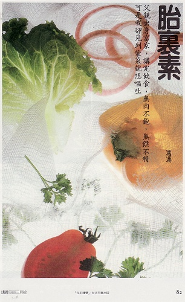

胎里素
冯冯
Wlzf../. 誊录
我是个素食者，青菜、豆腐、豆芽、花生、黄豆、吃得最开胃，鱼啦肉啦，鸡鸭珍馐，一见就觉得腥膻反胃欲呕。朋友请我吃饭，每使我面对满桌佳肴无从下箸，弄得宾主两不欢，尴尬之至，人家就爱问：“怎么那么笨？好鱼好肉不爱吃，偏爱吃青菜白饭？”是呀，就是那么笨，笨透了。就是无法下咽，那些荤菜，那怕是有名大馆子的名菜，别人闻在鼻子是香的，垂涎三尺，我闻在鼻子里是腥的臭的，尸味般的，一闻就想呕吐。
“怎么回事？”人家问，关心兼责备。我自己也不明白，大概就是所谓“胎里素”吧？
自从有知开始，我从幼就一直拒绝食用荤菜。父母亲担忧我营养不良，总是要我吃些肉类，而我总是不肯，千哄万骗，也不肯沾唇，有时惹得父母不高兴，就硬喂，硬喂了也吐出来，又哭又嚷，于是就招来一顿顿“鸡毛帚”打屁股。几乎天天餐餐都是哭哭吵吵，变成个脾气阴郁离群的个性。
“这孩子，”我母就叹气伤心：“怎么长得大啊？一些营养都不吃。”
“送他去寺里做和尚好了，”父亲说：“留在家有什么用？天天为了一顿饭哭哭吵吵，家无宁日！”
或者父母亲的确应该送我出家，因为我总是不听话，不肯吃荤，闹得吃一顿饭都好像上刑似的。父母也常常因此口角不和，母亲那时尚未信佛，她是个念过一些短期医护的人，略知西医营养学说，再加上中国人固有的“进补”观念，又自己养了许多鸡鸭，所以经常杀鸡进补，几乎天天吃什么当归炖鸡，参茸之类。父亲是个非常强壮高大的人，出身富家，讲究饮食，无肉不饱，无馔不精，不意生了一个惧怕吃荤的儿子。他们爱儿心切，只怕我营养不良长不大，似乎也不大明白到底是否适合的问题。父亲脾气是很急的，而且最不喜欢听见孩子哭闹，我一哭就捱打屁股，给关在黑房，什么都试过，我就是不肯吃荤。后来渐渐才勉强肯吃一些鸡蛋，但是，老实说，一则是怕打，二是怕伤父母的心，才咽下那腥膻的鸡蛋，鸡蛋也是腥臭令我作呕的，放半瓶芝麻油也吃不下一个蛋。
后来有一天趁母亲不在家，父亲就狠狠揍我一顿，打到我连着鼻涕眼泪吞下他放在我面前的炖牛肉汤，然后又吐得一地。以后肉汁成为每天难逃的一劫，总是给父母恐吓拿着鸡毛帚指着才吞下，而那些名贵药材炖鸡更是可怕，总得设法逃走，跑出去再也不敢回家，晚上回家不免又是鸡毛帚“修理”一番，而我总改不了，依然宁愿吃白饭泡开水，依然天天呕气，实在说，童年没有什么欢乐，一半也是由于太顽皮淘气，惹父母生气，多打多骂，一半也是由于不肯吃荤，常常顶撞父母，招来烦恼。
我母后来信佛，一半也可说是由于我的奉劝，二十余年来，我母不再杀过任何家禽，如今她老人家已经茹素，一如我之厌畏腥荤了，我父与我们分离二十余年，闻说现在也信了佛，不再喜荤了，我母当时年轻，吃鸡吃补太多，中了动物尸毒毒素吧？常常终年生病，又是出风疹，又是高血压，常年进出医生之门，住院留医，如今这些年，不吃荤腥，只吃素膳，反而显得白发童颜，满脸红润，身轻步健了，我未见父亲二十余年，不知他老人家如何，只听朋友说他也比前硬朗宽容得多了。
有时候我也能依稀记得一些幼时的往事影子，我大概是两岁，或者还不到两岁，正在学步，站在小儿车边，看着女仆杀鸡，那么一刀在鸡脖子上一来一往的割，刀不快，锯了半天，那鸡鲜血汨汨流出，却断不了气，拍翼踢腿，乱扑乱挣，眼睛求援地望向我，那情景，我永不能忘，当时我哭喊得什么样子，我仍记得。
“不杀啊！不杀啊！”我哭喊着，那时才牙牙学语，直到现在，我仍不时在梦中如是哭喊。我的确可以忆及到一岁半左右的事，许多情景人物，往往在闲谈时问母亲，她都惊异，“那是你一岁半的事呀！你怎么全记得？”我就是记得，而且有时历历如在目前。
我还记得看到男仆杀“田鸡”（青蛙），那是父亲最爱吃的美味，我记得青蛙如何给一刀砍下头颅，活生生地剥皮，剥了皮的全身四肢带着鲜血，仍在一弹一弹，一颤一颤地挣扎。或许正是从此我就不吃荤腥，或许我是胎里素，我自己也不明白。
成人以后，有一段时期，应酬多，酒席多，偶然也因不愿叫主人难以措置而勉强吃一点荤或者装作吃一点，菜肉都是夹放面前不动的，我未能像出家人那样守戒，实际上仍是怕见荤腥的。
住在加拿大，想吃素可真不是容易的事，天寒地冻，什么农产品都得仰赖美国运来，到过美加的人都知道，白菜多么难得多么名贵，比鱼肉鸡鸭还贵。我只好吃煮花生煮黄豆，有时买到一棵白菜，舍不得一下就吃，一餐只吃一片叶子，吃完还要把菜头种在花园，不忍它生机死亡，可是还是给冻死了，幸而还能买到很多苹果和美国橙子，每天喝些果汁，喝惯了芬芳的橙汁，越发怕那些荤腥了，连牛奶都觉得是腥的。
生活如此简单，不见客，不应酬，弹弹钢琴，写点小品，听听唱片或电台的古典音乐，喝果汁，吃素食。说不上什么附庸风雅，实在这正是我喜欢的生活方式。说到营养问题，我是消瘦一点，可从未患上“营养不良”之疾，三十几岁的人，洋人见到还以为是个大孩子，喊我“My Boy， My Boy”，上门来有事的一瞧都问：“可以跟你父母谈谈吗？”也不知把我看成多年轻呢。或者这就是素食偏食的唯一的坏处吧！
总之，素食有好处没好处，我都不管，只一提荤腥鱼肉鸡鸭，那些血淋淋的挣命的惨状就来到眼前，就放两斤芝麻油十斤胡椒粉二十磅香菜，我也是吃不下的了。
永忏楼随笔之二──《胎里素》
原载香港《内明》第49期：1976年04月1日
1988年03月号：《讲义》月刊转载